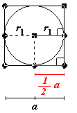
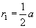
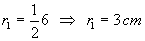
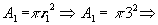
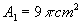

Item 04

A figura mostra uma circunferência inscrita em uma das faces do cubo. Observe que um raio que possui uma das extremidades em um dos pontos de tangência é paralelo a duas das arestas da face considerada, além disto mede metade dessa aresta:

Pelo item 01: a = 6 cm
Logo:

Portanto a área desta circunferência é:
 |  |
Conclusão: O item 04 é verdadeiro
 Voltar
Voltar